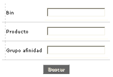
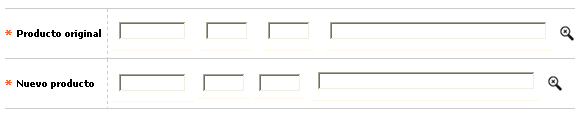
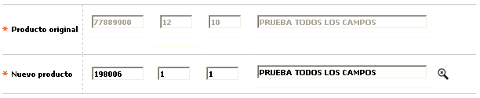

Programas comerciales
Programas cambio: En esta opción se registra para cada programa, los productos originales y los productos por los cuales será cambiado cada uno de ellos, previo cumplimiento de los parámetros definidos en el tab anterior.
El formulario contiene los enlaces: Actualizar, Eliminar y Adicionar. Adicionalmente, cuenta con un filtro de búsqueda y un botón para a la opción principal: Programas comerciales .

Filtro: Se pueden realizar consultas a través de las siguientes opciones:

Bin |
Campo con lista de valores de la cual se selecciona el Bin por el cual se desea filtrar; este criterio puede combinarse con el Segmento y Grupo de Afinidad, que son los otros dos componentes del producto. |
Producto |
Campo con lista de valores de la cual se selecciona el Segmento por el cual se desea filtrar; este criterio puede combinarse con el Bin y Grupo de Afinidad, que son los otros dos componentes del producto. |
Grupo de afinidad |
Campo con lista de valores de la cual se selecciona el Grupo de Afinidad por el cual se desea filtrar; este criterio puede combinarse con el Bin y Segmento, que son los otros dos componentes del producto. |
Adicionar: Si el usuario invoca la opción Adicionar se despliega un formulario con los siguientes campos:

Código |
El campo provee una lista de valores poblada previamente en la opción Definición de productos, con aquellos a los cuales se les ha relacionado el programa comercial correspondiente, y de la que es posible seleccionar cada uno de los productos originalmente poseídos por los clientes y que serán reemplazados por el producto nuevo, si cumplen las condiciones dadas al momento de ejecutar el proceso de cambio masivo de productos. |
Descripción |
Una vez cumplidos los parámetros de edad traslado y períodos de mora se define cuál es el producto destino del traslado, es decir, que cuando se cumplan dichos parámetros, todos los créditos serán trasladados al producto parametrizado. El campo provee de una lista de valores poblada previamente mediante la opción Definición de productos, la cual facilita la labor de selección del mismo. |
Actualizar: Al activar ese enlace , se despliega un formulario en el cual sólo es modificable el campo Nuevo producto.
